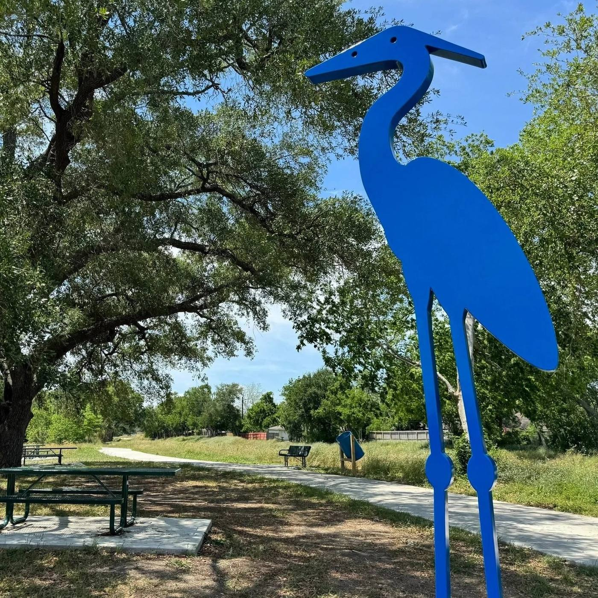
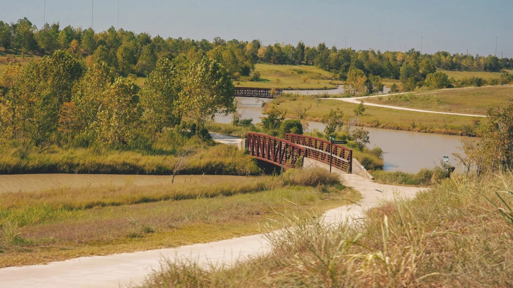

Ways to Give
Choose what works for you.
However you give, every dollar stays right here at Willow Waterhole.

One-Time Gift
Make a single donation of any amount to support the Greenway's most pressing needs right now.
Give Now
Become a Member
Join Friends of Willow Waterhole for member walks, event invitations, and ongoing impact.
Join Today
Business Partners
Align your business with environmental stewardship through our Local Business Partners Program.
Learn More